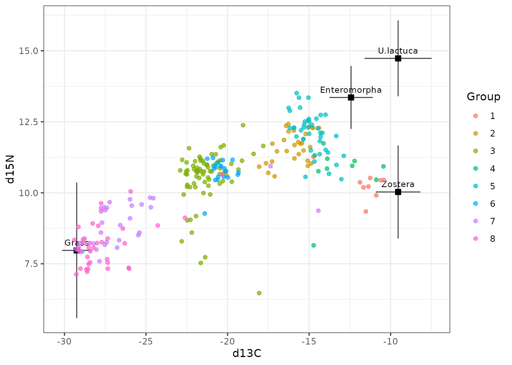
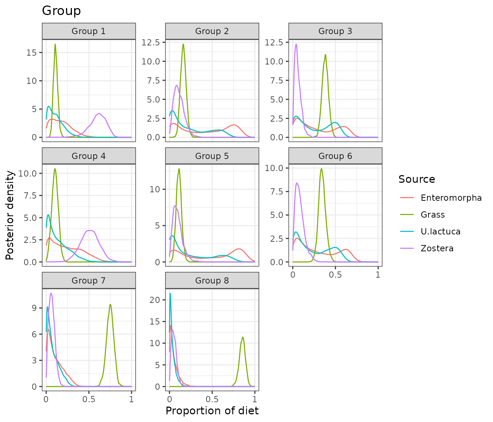
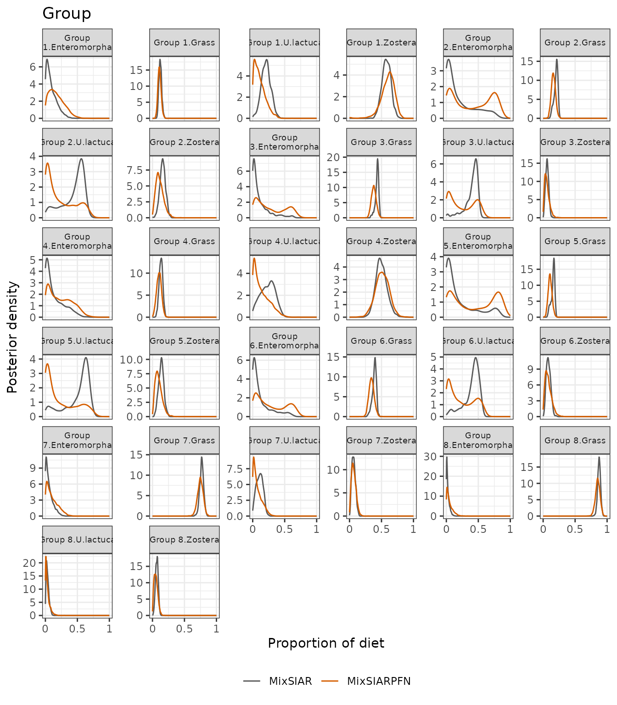
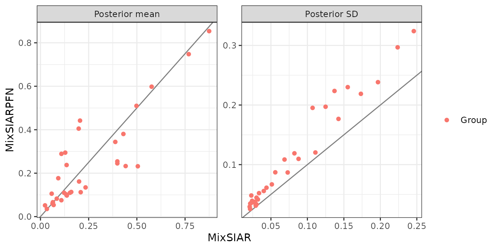
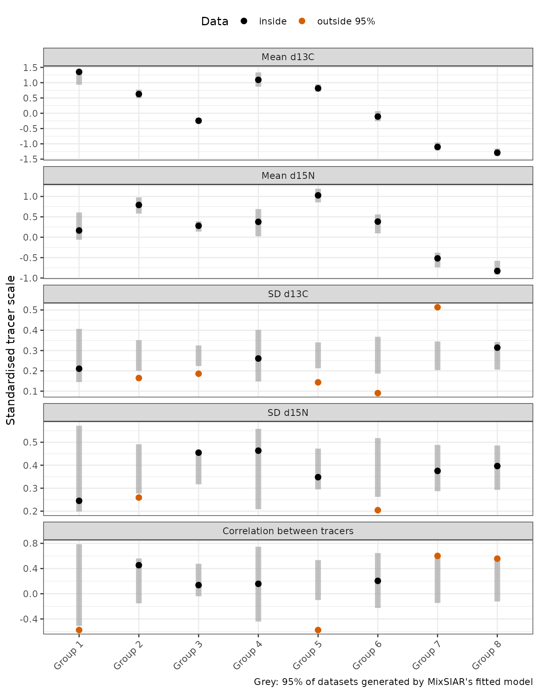

This follows MixSIAR’s geese example (Inger et al. 2006 data, as
analysed in Stock et al. 2018): 251 geese in 8 groups, two tracers (δ¹³C
and δ¹⁵N) and four food sources (grass and three algae: Enteromorpha,
Ulva lactuca and Zostera). Group is a fixed effect,
the sources’ elemental concentrations differ (concentration dependence),
and the error structure is Residual only. Only the fitting call differs
from MixSIAR’s vignette: run_pfn() in place of
write_JAGS_model() and run_model().
The data
mix <- load_mix_data(
filename = system.file("extdata", "geese_consumer.csv", package = "MixSIARPFN"),
iso_names = c("d13C", "d15N"), factors = "Group", fac_random = FALSE,
fac_nested = FALSE, cont_effects = NULL)
source <- load_source_data(
filename = system.file("extdata", "geese_sources.csv", package = "MixSIARPFN"),
source_factors = NULL, conc_dep = TRUE, data_type = "means", mix)
discr <- load_discr_data(
filename = system.file("extdata", "geese_discrimination.csv", package = "MixSIARPFN"),
mix)
mix
#> Consumer data: 251 consumers, 2 tracer(s): d13C, d15N
#> Fixed effect Group with 8 levels
source
#> Source data: 4 sources: Enteromorpha, Grass, U.lactuca, Zostera
#> With concentration dependenceThe isospace plot shows the geese, coloured by group, and the source means after discrimination, with ±1 SD. With four sources and two tracers the data cannot pin down every proportion (that needs at most one more source than tracers), so some of the diet is set by the prior and the sources’ spread:
plot_data(mix = mix, source = source, discr = discr)
Fitting the model
As in MixSIAR’s vignette, Residual only error
(process_err = FALSE) and the uninformative prior:
time <- system.time(
fit <- run_pfn(mix, source, discr, alpha.prior = 1,
resid_err = TRUE, process_err = FALSE)
)
fit
#> MixSIARPFN fit (Residual only error), 4 sources, in 0.8 s
#> Marginal posteriors (no joint draws). Global diet:
#> source mean sd 2.5% 97.5%
#> Enteromorpha 0.176 0.119 0.008 0.440
#> Grass 0.112 0.026 0.066 0.166
#> U.lactuca 0.111 0.086 0.004 0.316
#> Zostera 0.595 0.106 0.356 0.763
#> Use output_pfn() for every proportion and parameter.The fit took 0.8 seconds.
Results
out <- output_pfn(fit, mix, source,
output_options = list(summary_save = FALSE, plot_post_save_pdf = FALSE))
knitr::kable(round(summary_table(fit), 3))| Mean | SD | 2.5% | 5% | 25% | 50% | 75% | 95% | 97.5% | |
|---|---|---|---|---|---|---|---|---|---|
| p.global.Enteromorpha | 0.176 | 0.119 | 0.008 | 0.016 | 0.079 | 0.159 | 0.254 | 0.396 | 0.440 |
| p.global.Grass | 0.112 | 0.026 | 0.066 | 0.072 | 0.094 | 0.110 | 0.128 | 0.156 | 0.166 |
| p.global.U.lactuca | 0.111 | 0.086 | 0.004 | 0.007 | 0.041 | 0.093 | 0.162 | 0.277 | 0.316 |
| p.global.Zostera | 0.595 | 0.106 | 0.356 | 0.412 | 0.537 | 0.606 | 0.668 | 0.742 | 0.763 |
| p.Group 1.Enteromorpha | 0.177 | 0.119 | 0.008 | 0.016 | 0.081 | 0.160 | 0.255 | 0.396 | 0.441 |
| p.Group 1.Grass | 0.110 | 0.026 | 0.064 | 0.071 | 0.092 | 0.109 | 0.126 | 0.154 | 0.164 |
| p.Group 1.U.lactuca | 0.112 | 0.087 | 0.004 | 0.008 | 0.042 | 0.094 | 0.164 | 0.279 | 0.318 |
| p.Group 1.Zostera | 0.598 | 0.109 | 0.353 | 0.412 | 0.540 | 0.610 | 0.673 | 0.746 | 0.768 |
| p.Group 2.Enteromorpha | 0.405 | 0.297 | 0.004 | 0.010 | 0.099 | 0.405 | 0.705 | 0.819 | 0.839 |
| p.Group 2.Grass | 0.162 | 0.033 | 0.098 | 0.109 | 0.139 | 0.161 | 0.184 | 0.217 | 0.229 |
| p.Group 2.U.lactuca | 0.233 | 0.219 | 0.002 | 0.005 | 0.040 | 0.151 | 0.411 | 0.639 | 0.673 |
| p.Group 2.Zostera | 0.113 | 0.061 | 0.022 | 0.030 | 0.068 | 0.105 | 0.149 | 0.227 | 0.255 |
| p.Group 3.Enteromorpha | 0.289 | 0.224 | 0.007 | 0.014 | 0.083 | 0.232 | 0.512 | 0.652 | 0.676 |
| p.Group 3.Grass | 0.380 | 0.037 | 0.310 | 0.321 | 0.355 | 0.380 | 0.405 | 0.443 | 0.456 |
| p.Group 3.U.lactuca | 0.254 | 0.195 | 0.004 | 0.008 | 0.064 | 0.218 | 0.450 | 0.551 | 0.573 |
| p.Group 3.Zostera | 0.060 | 0.039 | 0.009 | 0.013 | 0.031 | 0.052 | 0.081 | 0.136 | 0.157 |
| p.Group 4.Enteromorpha | 0.238 | 0.177 | 0.005 | 0.011 | 0.077 | 0.213 | 0.374 | 0.550 | 0.596 |
| p.Group 4.Grass | 0.103 | 0.037 | 0.030 | 0.041 | 0.077 | 0.103 | 0.128 | 0.164 | 0.177 |
| p.Group 4.U.lactuca | 0.134 | 0.120 | 0.002 | 0.004 | 0.033 | 0.100 | 0.211 | 0.371 | 0.418 |
| p.Group 4.Zostera | 0.510 | 0.110 | 0.295 | 0.331 | 0.437 | 0.510 | 0.584 | 0.688 | 0.722 |
| p.Group 5.Enteromorpha | 0.442 | 0.324 | 0.004 | 0.009 | 0.104 | 0.453 | 0.773 | 0.875 | 0.893 |
| p.Group 5.Grass | 0.110 | 0.031 | 0.052 | 0.061 | 0.089 | 0.109 | 0.130 | 0.163 | 0.174 |
| p.Group 5.U.lactuca | 0.232 | 0.238 | 0.001 | 0.003 | 0.030 | 0.125 | 0.414 | 0.691 | 0.728 |
| p.Group 5.Zostera | 0.097 | 0.056 | 0.017 | 0.024 | 0.055 | 0.088 | 0.129 | 0.202 | 0.228 |
| p.Group 6.Enteromorpha | 0.295 | 0.230 | 0.007 | 0.013 | 0.080 | 0.240 | 0.518 | 0.671 | 0.698 |
| p.Group 6.Grass | 0.344 | 0.042 | 0.266 | 0.278 | 0.316 | 0.342 | 0.371 | 0.414 | 0.429 |
| p.Group 6.U.lactuca | 0.245 | 0.197 | 0.004 | 0.008 | 0.058 | 0.196 | 0.438 | 0.564 | 0.589 |
| p.Group 6.Zostera | 0.083 | 0.052 | 0.012 | 0.017 | 0.044 | 0.073 | 0.112 | 0.183 | 0.208 |
| p.Group 7.Enteromorpha | 0.106 | 0.087 | 0.003 | 0.006 | 0.033 | 0.083 | 0.162 | 0.275 | 0.307 |
| p.Group 7.Grass | 0.748 | 0.045 | 0.657 | 0.673 | 0.719 | 0.749 | 0.778 | 0.819 | 0.833 |
| p.Group 7.U.lactuca | 0.075 | 0.067 | 0.002 | 0.003 | 0.021 | 0.056 | 0.116 | 0.209 | 0.236 |
| p.Group 7.Zostera | 0.066 | 0.036 | 0.011 | 0.016 | 0.039 | 0.062 | 0.089 | 0.131 | 0.146 |
| p.Group 8.Enteromorpha | 0.052 | 0.048 | 0.002 | 0.003 | 0.016 | 0.037 | 0.073 | 0.151 | 0.179 |
| p.Group 8.Grass | 0.854 | 0.035 | 0.780 | 0.794 | 0.831 | 0.855 | 0.878 | 0.909 | 0.919 |
| p.Group 8.U.lactuca | 0.035 | 0.035 | 0.001 | 0.002 | 0.010 | 0.024 | 0.050 | 0.106 | 0.128 |
| p.Group 8.Zostera | 0.054 | 0.029 | 0.009 | 0.012 | 0.031 | 0.050 | 0.072 | 0.107 | 0.118 |
With a fixed effect, MixSIAR’s global diet is the diet of the first group, so the plots below show the eight groups:
out$plots$Group
Each is a marginal posterior: the network does not give joint draws, so the marginal means of one group’s diet need not sum to exactly 1, and sums or ratios of proportions cannot be computed from the output.
Comparison with MixSIAR
ref <- mixsiar_reference("geese")
cmp <- compare_mixsiar(fit, ref$draws, ref$summary)MixSIAR 3.1.12 fitted the same model with 3 chains of 1,000,000 iterations (burn-in 500,000), which took about 2.9 hours (largest Gelman-Rubin diagnostic 1.004). MixSIARPFN took 0.8 seconds.
Means, SDs, 95% intervals and the Wasserstein-1 distance (W1: how far, on average, one posterior’s mass has to move to match the other, on the proportion scale):
knitr::kable(data.frame(
quantity = cmp$name,
`MixSIARPFN mean` = round(cmp$pfn_mean, 3), `MixSIAR mean` = round(cmp$mixsiar_mean, 3),
`MixSIARPFN SD` = round(cmp$pfn_sd, 3), `MixSIAR SD` = round(cmp$mixsiar_sd, 3),
`MixSIARPFN 95% CI` = sprintf("%.2f to %.2f", cmp$pfn_q2.5, cmp$pfn_q97.5),
`MixSIAR 95% CI` = sprintf("%.2f to %.2f", cmp$mixsiar_q2.5, cmp$mixsiar_q97.5),
W1 = round(cmp$w1, 3), check.names = FALSE))| quantity | MixSIARPFN mean | MixSIAR mean | MixSIARPFN SD | MixSIAR SD | MixSIARPFN 95% CI | MixSIAR 95% CI | W1 |
|---|---|---|---|---|---|---|---|
| p.Group 1.Enteromorpha | 0.177 | 0.092 | 0.119 | 0.082 | 0.01 to 0.44 | 0.00 to 0.29 | 0.084 |
| p.Group 1.Grass | 0.110 | 0.122 | 0.026 | 0.021 | 0.06 to 0.16 | 0.08 to 0.17 | 0.012 |
| p.Group 1.U.lactuca | 0.112 | 0.209 | 0.087 | 0.073 | 0.00 to 0.32 | 0.07 to 0.35 | 0.096 |
| p.Group 1.Zostera | 0.598 | 0.577 | 0.109 | 0.069 | 0.35 to 0.77 | 0.44 to 0.71 | 0.038 |
| p.Group 2.Enteromorpha | 0.405 | 0.198 | 0.297 | 0.224 | 0.00 to 0.84 | 0.00 to 0.74 | 0.207 |
| p.Group 2.Grass | 0.162 | 0.200 | 0.033 | 0.030 | 0.10 to 0.23 | 0.13 to 0.24 | 0.039 |
| p.Group 2.U.lactuca | 0.233 | 0.442 | 0.219 | 0.173 | 0.00 to 0.67 | 0.04 to 0.64 | 0.213 |
| p.Group 2.Zostera | 0.113 | 0.160 | 0.061 | 0.044 | 0.02 to 0.25 | 0.07 to 0.24 | 0.048 |
| p.Group 3.Enteromorpha | 0.289 | 0.109 | 0.224 | 0.137 | 0.01 to 0.68 | 0.00 to 0.53 | 0.180 |
| p.Group 3.Grass | 0.380 | 0.430 | 0.037 | 0.027 | 0.31 to 0.46 | 0.36 to 0.47 | 0.050 |
| p.Group 3.U.lactuca | 0.254 | 0.399 | 0.195 | 0.107 | 0.00 to 0.57 | 0.08 to 0.52 | 0.157 |
| p.Group 3.Zostera | 0.060 | 0.063 | 0.039 | 0.024 | 0.01 to 0.16 | 0.02 to 0.11 | 0.013 |
| p.Group 4.Enteromorpha | 0.238 | 0.136 | 0.177 | 0.143 | 0.01 to 0.60 | 0.00 to 0.48 | 0.102 |
| p.Group 4.Grass | 0.103 | 0.133 | 0.037 | 0.028 | 0.03 to 0.18 | 0.08 to 0.19 | 0.030 |
| p.Group 4.U.lactuca | 0.134 | 0.234 | 0.120 | 0.111 | 0.00 to 0.42 | 0.02 to 0.43 | 0.100 |
| p.Group 4.Zostera | 0.510 | 0.498 | 0.110 | 0.088 | 0.30 to 0.72 | 0.34 to 0.68 | 0.023 |
| p.Group 5.Enteromorpha | 0.442 | 0.205 | 0.324 | 0.246 | 0.00 to 0.89 | 0.00 to 0.80 | 0.237 |
| p.Group 5.Grass | 0.110 | 0.153 | 0.031 | 0.029 | 0.05 to 0.17 | 0.09 to 0.19 | 0.043 |
| p.Group 5.U.lactuca | 0.232 | 0.505 | 0.238 | 0.197 | 0.00 to 0.73 | 0.03 to 0.71 | 0.275 |
| p.Group 5.Zostera | 0.097 | 0.137 | 0.056 | 0.040 | 0.02 to 0.23 | 0.06 to 0.22 | 0.041 |
| p.Group 6.Enteromorpha | 0.295 | 0.129 | 0.230 | 0.155 | 0.01 to 0.70 | 0.00 to 0.56 | 0.166 |
| p.Group 6.Grass | 0.344 | 0.388 | 0.042 | 0.032 | 0.27 to 0.43 | 0.31 to 0.44 | 0.044 |
| p.Group 6.U.lactuca | 0.245 | 0.399 | 0.197 | 0.125 | 0.00 to 0.59 | 0.06 to 0.55 | 0.160 |
| p.Group 6.Zostera | 0.083 | 0.085 | 0.052 | 0.034 | 0.01 to 0.21 | 0.03 to 0.15 | 0.015 |
| p.Group 7.Enteromorpha | 0.106 | 0.058 | 0.087 | 0.056 | 0.00 to 0.31 | 0.00 to 0.20 | 0.047 |
| p.Group 7.Grass | 0.748 | 0.769 | 0.045 | 0.030 | 0.66 to 0.83 | 0.71 to 0.83 | 0.022 |
| p.Group 7.U.lactuca | 0.075 | 0.108 | 0.067 | 0.051 | 0.00 to 0.24 | 0.02 to 0.20 | 0.037 |
| p.Group 7.Zostera | 0.066 | 0.064 | 0.036 | 0.028 | 0.01 to 0.15 | 0.02 to 0.13 | 0.006 |
| p.Group 8.Enteromorpha | 0.052 | 0.024 | 0.048 | 0.023 | 0.00 to 0.18 | 0.00 to 0.08 | 0.028 |
| p.Group 8.Grass | 0.854 | 0.875 | 0.035 | 0.023 | 0.78 to 0.92 | 0.83 to 0.92 | 0.021 |
| p.Group 8.U.lactuca | 0.035 | 0.033 | 0.035 | 0.022 | 0.00 to 0.13 | 0.00 to 0.09 | 0.008 |
| p.Group 8.Zostera | 0.054 | 0.068 | 0.029 | 0.021 | 0.01 to 0.12 | 0.03 to 0.11 | 0.016 |
plot_compare(fit, ref$draws, block = "Group")
plot_compare(fit, ref$draws, type = "means")
What this shows. Grass, the source the data pin down best, is close in every group: MixSIARPFN’s means differ from MixSIAR’s by 0.03 on average, though its posteriors are wider (median SD ratio 1.31). The three algae trade off against each other, since four sources cannot all be determined from two tracers, and there the two fits differ more: mean difference 0.09, median SD ratio 1.40, and the largest difference is Group 5.U.lactuca (0.23 against 0.50). MixSIARPFN also puts more probability near 0 on the algae: for group 2’s U. lactuca proportion, the probability that it is below 0.02 is 0.16 against MixSIAR’s 0.01, a tendency of the network for sources the data identify poorly. For data like these, where sources overlap, MixSIARPFN gives a quick first answer and a MixSIAR run the more precise one.
Does MixSIAR’s model fit these data?
The comparison above takes MixSIAR as the reference. That is fair
only where MixSIAR’s model describes the data, which a posterior
predictive check can test: MixSIAR’s fitted model generates new
datasets, one per posterior draw, and the real data are compared with
them group by group. MixSIARPFN gives marginal posteriors only, so it
cannot run this check itself; the results come from a separate MixSIAR
run with the same model and data, shipped with the package
(mixsiar_reference("geese")$ppc). For each group, the plot
shows each tracer’s mean and SD and the correlation between the tracers,
on the standardised scale MixSIAR’s model uses:

11 of the 40 group statistics fall outside the 95% range of the model’s datasets (7 outside 99%). For six datasets simulated from MixSIAR’s own model with the same design the count is 0 to 2 (about 2 are expected by chance). With Residual only error, MixSIAR’s model has one residual covariance for all eight groups, but the groups differ: groups 2, 3, 5, 6 are much tighter than the model allows, group 7 much wider, and the correlation between δ¹³C and δ¹⁵N runs from -0.58 to 0.60 across groups, where the model’s datasets give about 0.23 in every group. The checks on the whole dataset (each tracer’s mean, SD and range, and the total log-likelihood) pass, so MixSIAR’s usual output would not show this.
Where the model does not fit, MixSIAR’s posterior is not a correct answer for MixSIARPFN to match, and the two can differ more. The difference between the two fits by group:
| Group | Statistics outside 95% (of 5) | Mean W1, MixSIARPFN against MixSIAR |
|---|---|---|
| Group 1 | 1 | 0.058 |
| Group 2 | 2 | 0.127 |
| Group 3 | 1 | 0.100 |
| Group 4 | 0 | 0.064 |
| Group 5 | 2 | 0.149 |
| Group 6 | 2 | 0.096 |
| Group 7 | 2 | 0.028 |
| Group 8 | 1 | 0.019 |
The groups that are tighter than the model allows are where the fits differ most (mean W1 0.118, against 0.042 for the other groups). On data like these, the differences between MixSIARPFN and MixSIAR say as much about the model as about either method: both are fitting a model that leaves out structure the data show.